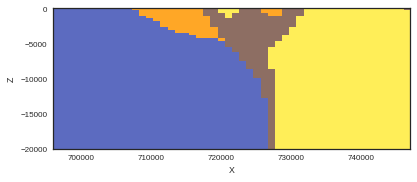
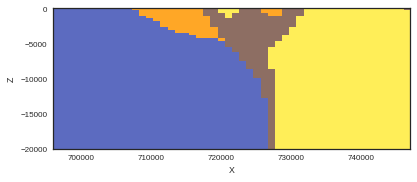
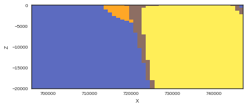
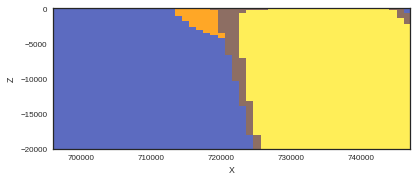

Chapter 4: Bayesian Statistics (Working in progress proof of concept)¶
| EarlyGranite_Series | BIF_Series | SimpleMafic_Series | |
|---|---|---|---|
| 0 | EarlyGranite | SimpleMafic2 | SimpleMafic1 |
| 1 | EarlyGranite | SimpleBIF | SimpleMafic1 |
Setting uncertainties adding the values to the Dataframe.
| X | Y | Z | azimuth | dip | polarity | formation | series | order_series | G_x | G_y | G_z | X_std | Y_std | Z_std | dip_std | azimuth_std | |
|---|---|---|---|---|---|---|---|---|---|---|---|---|---|---|---|---|---|
| 0 | 735082.0630 | 6879102.25 | 480.551436 | 276.153239 | 80.0 | 1 | EarlyGranite | EarlyGranite_Series | 1 | -0.979134 | 0.105560 | 0.173648 | None | 0 | 0 | 10 | 10 |
| 1 | 715991.2815 | 6882773.25 | 505.165864 | 152.654159 | 80.0 | 1 | EarlyGranite | EarlyGranite_Series | 1 | 0.452382 | -0.874755 | 0.173648 | None | 0 | 0 | 10 | 10 |
| 2 | 728767.4065 | 6878759.25 | 470.031623 | 165.980598 | 80.0 | 1 | EarlyGranite | EarlyGranite_Series | 1 | 0.238570 | -0.955474 | 0.173648 | None | 0 | 0 | 10 | 10 |
| 3 | 730627.5315 | 6880472.50 | 477.402658 | 120.986348 | 80.0 | 1 | EarlyGranite | EarlyGranite_Series | 1 | 0.844266 | -0.507012 | 0.173648 | None | 0 | 0 | 10 | 10 |
| 4 | 732683.4690 | 6882332.75 | 481.711952 | 161.600709 | 80.0 | 1 | EarlyGranite | EarlyGranite_Series | 1 | 0.310842 | -0.934464 | 0.173648 | None | 0 | 0 | 10 | 10 |
I am in the setting
float32
I am here
[2, 2]
Now the generation of the geomodel will be an operation embedded in a larger tree.
Because now the GeMpy model is a theano operation and not a theano function, to call it we need to use theano variables (with theano functions we call them with python variables). This is very easy to modify, we just need to use theano shared to convert our python input data into theano variables.
The pymc3 objects are already theano variables (pm.Normal and so on). Now the trick is that using the theano function T.set_subtensor, we can change one deterministic value of the input arrays(the ones printed in the cell above) by a stochastic pymc3 object. Then with the new arrays we just have to call the theano operation and pymc will do the rest
[9, 9, 9]
/home/miguel/anaconda3/lib/python3.6/site-packages/scipy/linalg/basic.py:223: RuntimeWarning: scipy.linalg.solve
Ill-conditioned matrix detected. Result is not guaranteed to be accurate.
Reciprocal condition number: 2.4215285776563178e-08
' condition number: {}'.format(rcond), RuntimeWarning)
0%| | 0/40 [00:00<?, ?it/s]/home/miguel/anaconda3/lib/python3.6/site-packages/scipy/linalg/basic.py:223: RuntimeWarning: scipy.linalg.solve
Ill-conditioned matrix detected. Result is not guaranteed to be accurate.
Reciprocal condition number: 2.4215285776563178e-08
' condition number: {}'.format(rcond), RuntimeWarning)
8%|▊ | 3/40 [00:04<01:18, 2.13s/it]/home/miguel/anaconda3/lib/python3.6/site-packages/scipy/linalg/basic.py:223: RuntimeWarning: scipy.linalg.solve
Ill-conditioned matrix detected. Result is not guaranteed to be accurate.
Reciprocal condition number: 3.6804916447863434e-08
' condition number: {}'.format(rcond), RuntimeWarning)
10%|█ | 4/40 [00:05<01:00, 1.69s/it]/home/miguel/anaconda3/lib/python3.6/site-packages/scipy/linalg/basic.py:223: RuntimeWarning: scipy.linalg.solve
Ill-conditioned matrix detected. Result is not guaranteed to be accurate.
Reciprocal condition number: 4.177091028623181e-08
' condition number: {}'.format(rcond), RuntimeWarning)
12%|█▎ | 5/40 [00:06<00:48, 1.38s/it]/home/miguel/anaconda3/lib/python3.6/site-packages/scipy/linalg/basic.py:223: RuntimeWarning: scipy.linalg.solve
Ill-conditioned matrix detected. Result is not guaranteed to be accurate.
Reciprocal condition number: 2.817358790707658e-08
' condition number: {}'.format(rcond), RuntimeWarning)
15%|█▌ | 6/40 [00:06<00:39, 1.16s/it]/home/miguel/anaconda3/lib/python3.6/site-packages/scipy/linalg/basic.py:223: RuntimeWarning: scipy.linalg.solve
Ill-conditioned matrix detected. Result is not guaranteed to be accurate.
Reciprocal condition number: 5.478779740997197e-08
' condition number: {}'.format(rcond), RuntimeWarning)
18%|█▊ | 7/40 [00:07<00:33, 1.01s/it]/home/miguel/anaconda3/lib/python3.6/site-packages/scipy/linalg/basic.py:223: RuntimeWarning: scipy.linalg.solve
Ill-conditioned matrix detected. Result is not guaranteed to be accurate.
Reciprocal condition number: 4.4421348377454706e-08
' condition number: {}'.format(rcond), RuntimeWarning)
20%|██ | 8/40 [00:08<00:28, 1.11it/s]/home/miguel/anaconda3/lib/python3.6/site-packages/scipy/linalg/basic.py:223: RuntimeWarning: scipy.linalg.solve
Ill-conditioned matrix detected. Result is not guaranteed to be accurate.
Reciprocal condition number: 5.4531707149862996e-08
' condition number: {}'.format(rcond), RuntimeWarning)
28%|██▊ | 11/40 [00:10<00:21, 1.36it/s]/home/miguel/anaconda3/lib/python3.6/site-packages/scipy/linalg/basic.py:223: RuntimeWarning: scipy.linalg.solve
Ill-conditioned matrix detected. Result is not guaranteed to be accurate.
Reciprocal condition number: 4.235039341438096e-08
' condition number: {}'.format(rcond), RuntimeWarning)
40%|████ | 16/40 [00:13<00:15, 1.51it/s]/home/miguel/anaconda3/lib/python3.6/site-packages/scipy/linalg/basic.py:223: RuntimeWarning: scipy.linalg.solve
Ill-conditioned matrix detected. Result is not guaranteed to be accurate.
Reciprocal condition number: 5.433537708654512e-08
' condition number: {}'.format(rcond), RuntimeWarning)
42%|████▎ | 17/40 [00:14<00:15, 1.52it/s]/home/miguel/anaconda3/lib/python3.6/site-packages/scipy/linalg/basic.py:223: RuntimeWarning: scipy.linalg.solve
Ill-conditioned matrix detected. Result is not guaranteed to be accurate.
Reciprocal condition number: 4.1121396066046145e-08
' condition number: {}'.format(rcond), RuntimeWarning)
45%|████▌ | 18/40 [00:14<00:14, 1.52it/s]/home/miguel/anaconda3/lib/python3.6/site-packages/scipy/linalg/basic.py:223: RuntimeWarning: scipy.linalg.solve
Ill-conditioned matrix detected. Result is not guaranteed to be accurate.
Reciprocal condition number: 4.794599561819268e-08
' condition number: {}'.format(rcond), RuntimeWarning)
85%|████████▌ | 34/40 [00:25<00:03, 1.53it/s]/home/miguel/anaconda3/lib/python3.6/site-packages/scipy/linalg/basic.py:223: RuntimeWarning: scipy.linalg.solve
Ill-conditioned matrix detected. Result is not guaranteed to be accurate.
Reciprocal condition number: 3.8119761569532784e-08
' condition number: {}'.format(rcond), RuntimeWarning)
92%|█████████▎| 37/40 [00:27<00:01, 1.51it/s]/home/miguel/anaconda3/lib/python3.6/site-packages/scipy/linalg/basic.py:223: RuntimeWarning: scipy.linalg.solve
Ill-conditioned matrix detected. Result is not guaranteed to be accurate.
Reciprocal condition number: 4.07877926988931e-08
' condition number: {}'.format(rcond), RuntimeWarning)
98%|█████████▊| 39/40 [00:28<00:00, 1.47it/s]/home/miguel/anaconda3/lib/python3.6/site-packages/scipy/linalg/basic.py:223: RuntimeWarning: scipy.linalg.solve
Ill-conditioned matrix detected. Result is not guaranteed to be accurate.
Reciprocal condition number: 3.935079107009187e-08
' condition number: {}'.format(rcond), RuntimeWarning)
100%|██████████| 40/40 [00:29<00:00, 1.47it/s]/home/miguel/anaconda3/lib/python3.6/site-packages/pymc3/step_methods/hmc/nuts.py:418: UserWarning: Chain 0 contains only 30 samples.
% (self._chain_id, n))
/home/miguel/anaconda3/lib/python3.6/site-packages/pymc3/step_methods/hmc/nuts.py:448: UserWarning: Chain 0 reached the maximum tree depth. Increase max_treedepth, increase target_accept or reparameterize.
'reparameterize.' % self._chain_id)

 



 



---------------------------------------------------------------------------
IndexError Traceback (most recent call last)
<ipython-input-10-bb562bc0d205> in <module>()
1 import matplotlib.pyplot as plt
2 for i in range(100):
----> 3 gp.plot_section(geo_data, trace.get_values('GemPy')[i][-1, 0, :], 13,
4 direction='y', plot_data=False)
5 plt.show()
IndexError: index 30 is out of bounds for axis 0 with size 30